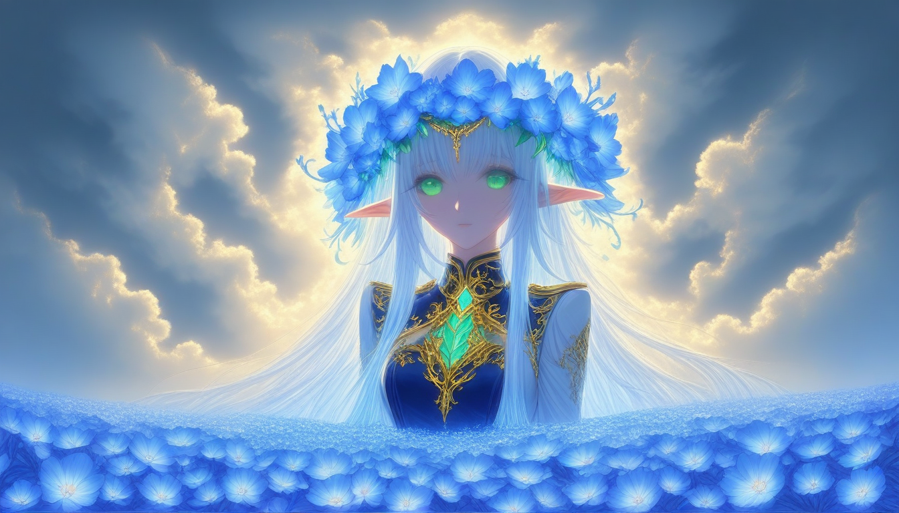
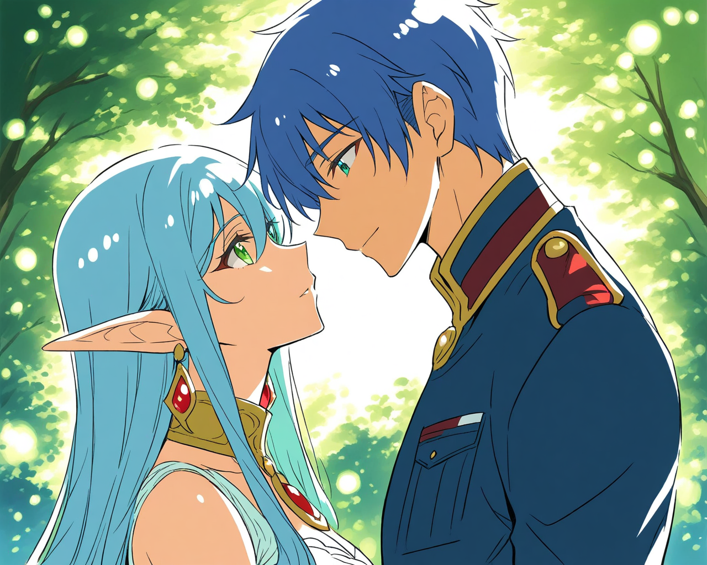

| 總分 | 完成後打勾 | 配分 | 分項描述 |
|---|---|---|---|
| 4 | Simple baseline - 完成ComfyUI建置 | ||
| 4 | Medium baseline - 完成芙莉蓮文生圖 | ||
| 2 | Strong baseline - 替換模型完成辛梅爾文生圖 | ||
| -10 | 沒有寫100字心得 |
1344 * 768
LoRA Strength : 1.0
Positive：Anime style female elf character, portrait, beautiful face with gentle smile, bright green eyes, long flowing blue and white gradient hair, pointed ears with ruby drop earrings, blue flower crown, elegant military-style blue jacket with gold trim and red gemstones, black choker collar, sunset sky background with soft clouds, floating blue flower petals in the air, blue flowers in foreground, dreamy atmospheric lighting, high quality illustration, soft color palette, detailed anime art, cinematic composition with shallow depth of field, distant male figure silhouette in background
Negative：Negative prompt: full body shot, hands, deformed face, asymmetrical features, multiple characters in foreground, crowded scene, realistic style, photorealistic details, western cartoon style, flat colors, low quality, blurry, noisy background, oversaturated colors, dark lighting, indoor setting, city background, text overlay, watermarks, logos, multiple perspectives, distorted anatomy, incorrect proportions, chibi style, exaggerated expressions, childish art style, heavy shadows, dull colors, bright neon colors,
1024 * 1280
LoRA1 Strength : 0.75
Positive: Anime style couple, face to face intimate moment, blue-haired male character with military style uniform and silver buckles, elegant female elf with white-blue hair, pointy ears, green eyes, gold collar with red gemstone, delicate earrings, soft dappled lighting through trees, gentle forest background with green bokeh effect, detailed anime illustration, soft color palette, romantic atmosphere, high quality, clean lines,
Negative: multiple scenes, distorted anatomy, extra limbs, missing limbs, deformed hands, blurry, bad quality, low resolution, unfocused, grainy, noisy background, oversaturated colors, full body shot, crowded scene, multiple characters in background, realistic style, photorealistic, 3D render, Western cartoon style, childish style, chibi, exaggerated facial features, bright neon colors, dark horror elements, text overlay, watermarks, signatures, logos,
